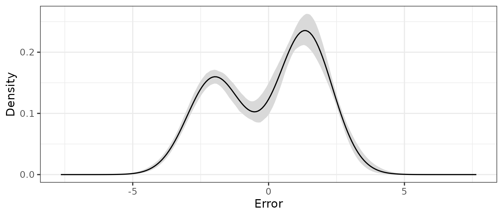
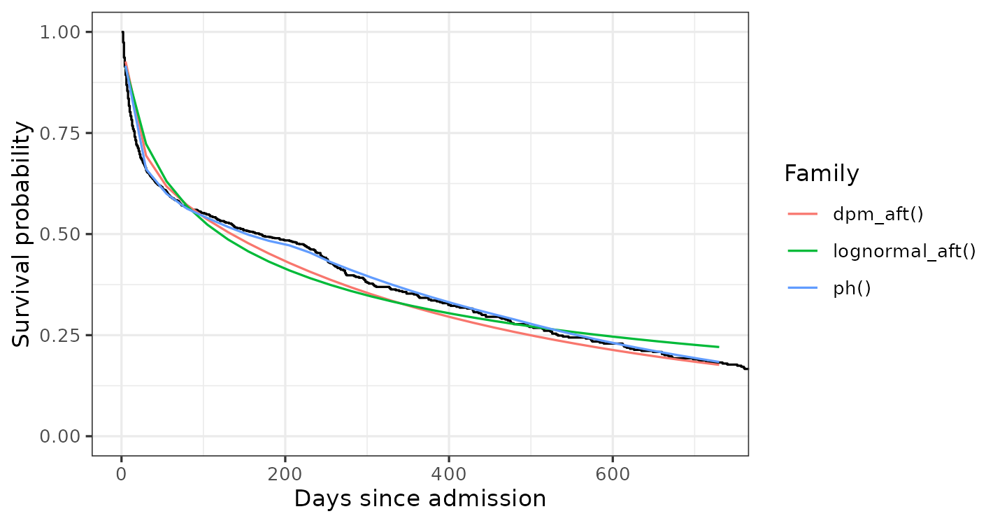
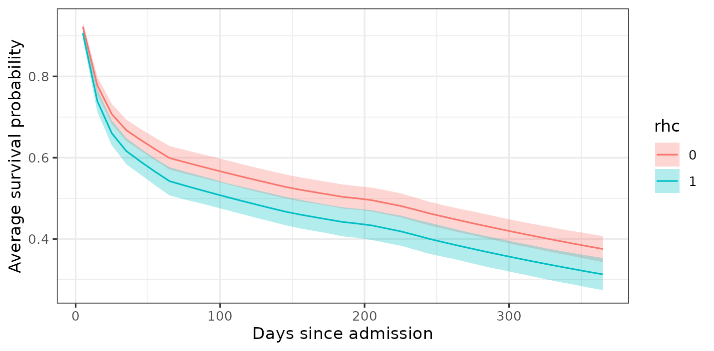

Introduction
A survival outcome is the time until an event, such as death, relapse, or the failure of a machine part, observed for some units and right-censored for the rest, whose event had not happened by the time they were last seen. bartisan fits BART models to survival outcomes with five families. They differ in which part of the model the forest describes and which part is given a parametric form, and so in what the forest’s output means, but each of them yields the quantities a survival analysis usually reports: the probability of surviving past a given time, the median survival time, the hazard, and contrasts of these between groups.
In this guide, we will analyze the survival of critically ill
patients in the rhc data. First we’ll describe the five
families and fit one of them. Next we’ll cover how to choose among them,
by checking each fit against the observed survival and by comparing
their predictive performance. Finally we’ll cover how to read a fit,
from what its predictor means to the survival probabilities, median
survival times, hazards, and treatment contrasts that are usually the
quantities to report, and close with a few less common needs.
The rhc data come from the SUPPORT study of right heart
catheterization in critically ill patients (Connors et al. 1996); see
help("rhc", package = "bartisan") for details. The variable
days is the number of days from admission to death, or to
last contact for a patient who did not die, and death
records which of the two it is. About a third of the patients (35%) are
censored, and most of them were last contacted about 210 days after
admission, so the data carry much more information about survival in the
first six months than after. The Kaplan-Meier estimate gives the
observed survival at a few times:
km <- survfit(Surv(days, death) ~ 1, data = rhc)
summary(km, times = c(30, 180, 365))
#> Call: survfit(formula = Surv(days, death) ~ 1, data = rhc)
#>
#> time n.risk n.event survival std.err lower 95% CI upper 95% CI
#> 30 995 513 0.658 0.0123 0.634 0.682
#> 180 705 245 0.493 0.0129 0.468 0.519
#> 365 163 91 0.342 0.0166 0.311 0.376About two thirds of the patients survived 30 days and about half survived 180, and only 163 of the 1500 were still under observation a year after admission.
The Survival Families
The five families that take a survival outcome are listed below. In the table, \(T\) is the survival time and \(\eta(x)\) is the forest’s output, a sum of trees in the predictors \(x\).
| Family | Model | A difference \(\Delta\eta\) in the predictor is | Nuisance parameters |
|---|---|---|---|
dpm_aft() |
\(\log T = \eta(x) + W\), with \(W\) a Dirichlet process mixture of normals | a log time ratio | the error distribution |
lognormal_aft() |
\(\log T = \eta(x) + \sigma\epsilon\), with \(\epsilon\) standard normal | a log time ratio | \(\sigma\) |
loglogistic_aft() |
the same, with \(\epsilon\) standard logistic | a log time ratio | \(\sigma\) |
weibull_aft() |
the same, with \(\epsilon\) standard smallest extreme value | a log time ratio, and \(-\Delta\eta/\sigma\) is a log hazard ratio | \(\sigma\) |
ph() |
\(\lambda(t \mid x) = \lambda_0(t)\exp\{\eta(x)\}\), with \(\lambda_0\) piecewise constant | a log hazard ratio | \(\lambda_0\), one value per bin |
The first four are accelerated failure time models, which describe the log of the survival time. A difference in the predictor stretches or compresses the time axis: if two patients’ predictors differ by \(\Delta\eta\), every quantile of the second patient’s survival time is \(e^{\Delta\eta}\) times the first’s, which is the time ratio. The last is a proportional hazards model, which describes the hazard (i.e., the rate at which the event occurs among those who have survived so far) as a baseline hazard \(\lambda_0(t)\) shared by all patients, multiplied by \(e^{\eta(x)}\). A difference of \(\Delta\eta\) there multiplies the hazard by \(e^{\Delta\eta}\) at every time, which is the hazard ratio. So a larger predictor means longer survival in the first four families and shorter survival in the last.
In both structures the forest lets the effect of each predictor
depend on the values of the others, so, unlike in
survival::survreg() or survival::coxph() with
a linear predictor, nothing has to be specified about interactions or
the shape of each relationship. What each structure still assumes is the
form in which the predictors act on survival: as a stretch of the time
axis, or as a multiple of the hazard that is the same at every time.
The families also differ in the shapes the hazard can take over time.
weibull_aft() has a monotone hazard, which can rise, fall,
or stay flat but cannot change direction, and it is the one family that
is both an accelerated failure time model and a proportional hazards
model. lognormal_aft() and loglogistic_aft()
allow a hazard that rises and then falls, the log-logistic with the
heavier tails of the two. dpm_aft() estimates the
distribution of the error rather than assuming one (Henderson et al.
2020), so its hazard can take shapes that none of the three
parametric families can, including those of a survival time with more
than one mode. ph() is a proportional hazards model like
the Cox model, but with the baseline hazard estimated as a step function
rather than left unspecified (Basak et al. 2024), so the baseline can
take any shape.
lognormal_aft() and loglogistic_aft() are
the fastest to fit, dpm_aft() is close behind, and
weibull_aft() and ph() take several times
longer, though none is slow enough at sample sizes like this one for the
cost to decide the choice.
Fitting a Model
The response is given as Surv(time, status) using
survival::Surv(), with the observed times, which must be
positive, as its first argument, and as its second an indicator that is
1 for an event and 0 for a censored observation; a two-column matrix of
the same (e.g., cbind(days, death)) can be supplied
instead. Only right censoring is supported. As in
survival::coxph() and other standard survival models,
censoring is assumed to be independent of the event time given the
predictors.
Below, we fit a model for the time to death with catheterization
(rhc) and the covariates as predictors.
dpm_aft() is the family used when a Surv
response is given and the family argument is omitted;
naming it, as we do here, silences the message that reports the
choice.
set.seed(2026)
# Fit a BART accelerated failure time model whose error
# distribution is a Dirichlet process mixture of normals
fit_dpm <- bartisan(Surv(days, death) ~ rhc + age + sex + race + edu + aps +
meanbp + resp + hema + pafi + paco2 + crea + surv2m +
card,
data = rhc, family = dpm_aft())
fit_dpm
#> Generalized BART
#>
#> Call:
#> bartisan(formula = Surv(days, death) ~ rhc + age + sex + race +
#> edu + aps + meanbp + resp + hema + pafi + paco2 + crea +
#> surv2m + card, data = rhc, family = dpm_aft())
#>
#> Family: "dpm_aft" with the "identity" link
#> Observations: 1500
#> Structure: 1 forest of 50 trees, soft decision rules
#> Draws: 800 kept after 200 warmup
#>
#> Posterior means: alpha = 0.764, clusters = 5.2, center = 0.464, error_sd = 1.91The last line of the output reports the posterior means of the
parameters of the error distribution, such as the number of mixture
components in use (clusters); error_density(),
below, shows the distribution itself. Prior weights (e.g., sampling
weights) can be supplied through the weights argument for
every survival family except dpm_aft(), which does not
accept them.
The fits in this vignette use the default single chain for brevity.
Normally, we would run several chains, possibly change the number of
burn-in and retained draws, and examine convergence diagnostics to make
sure the model was fit correctly; see
vignette("diagnostics") for how to set these fit controls
and check them.
Choosing a Family
The choice of family is a choice of assumptions, and substantive
knowledge about how the predictors act on survival, or about the shape
of the hazard, is worth using where it exists. The quantity to be
reported can also narrow the choice: a hazard ratio can be read only
from ph() and weibull_aft(), and a time ratio
only from the accelerated failure time families. Survival probabilities
and median survival times are available from every family, and when they
are the quantities of interest, the families can be compared on how well
each one describes the data.
Without a reason to prefer one, we recommend fitting both
dpm_aft() and ph(), the most flexible family
within each of the two structures, and comparing them. In simulations we
ran across a range of data-generating processes, dpm_aft()
came close to the correctly specified family whenever one was among the
alternatives and was far more accurate than all of the others when the
error distribution was bimodal, which is why it is the default.
ph() was the most accurate family when the truth was a
proportional hazards model whose baseline hazard rose and then fell,
which no accelerated failure time model can represent, but
dpm_aft() beat it whenever the truth was an accelerated
failure time model with a non-Weibull error. In the same simulations,
the families disagreed much more about survival probabilities than about
how patients were ranked by risk, so when only the ranking matters
(e.g., to identify the patients at highest risk), the choice of family
matters much less.
Below, we fit ph() to the same data, and
lognormal_aft() for reference, by updating the original
call with a new family:
set.seed(2026)
fit_ph <- update(fit_dpm, family = ph())
set.seed(2026)
fit_ln <- update(fit_dpm, family = lognormal_aft())The Error Distribution (error_density())
A dpm_aft() fit estimates the distribution of its error
\(W\), and error_density()
returns the posterior of that density on a grid of values, which its
plot() method draws with a pointwise 95% credible
interval:
plot(error_density(fit_dpm))
The density has two well separated modes: patients with the same
covariates tend either to die within weeks of admission or to survive
for many months, with fewer in between. No normal distribution, which
lognormal_aft() assumes for the error, can take that shape,
and neither can the logistic or smallest extreme value distributions of
the other two parametric families.
Predicted and Observed Survival
A useful check of a survival model is whether it reproduces the
observed survival curve. predict() with
type = "survival" returns each patient’s predicted
probability of surviving past each of the times given in
times, and averaging these over the patients gives the
survival curve the model implies for the sample, which can be compared
with the Kaplan-Meier estimate computed above1. Below, we compute
that average curve for each of the three fits and plot them over the
Kaplan-Meier estimate, which is in black:
library(ggplot2)
times <- seq(5, 730, by = 25)
# A fit's predicted survival curve, averaged over the patients
avg_curve <- function(fit, family) {
data.frame(family = family, time = times,
surv = colMeans(predict(fit, type = "survival",
times = times)))
}
curves <- rbind(avg_curve(fit_dpm, "dpm_aft()"),
avg_curve(fit_ln, "lognormal_aft()"),
avg_curve(fit_ph, "ph()"))
ggplot(curves, aes(x = time, y = surv)) +
geom_step(data = data.frame(time = c(0, km$time), surv = c(1, km$surv))) +
geom_line(aes(color = family)) +
coord_cartesian(xlim = c(0, 730), ylim = c(0, 1)) +
labs(x = "Days since admission", y = "Survival probability",
color = "Family")
The ph() curve follows the Kaplan-Meier estimate closely
over the whole two years. Both accelerated failure time fits predict too
few deaths in the first two months and too many between about three
months and a year, and dpm_aft(), with its estimated error,
is the closer of the two.
Leave-One-Out Cross-Validation (loo())
Leave-one-out cross-validation compares models on how well each one
predicts every patient’s outcome from a fit that did not see it, as
described in vignette("comparison"). The accelerated
failure time families report the density of the log time and
ph() reports the density of the time itself, so a
comparison across the two kinds needs scale = "time" in
every call to loo(), which puts each model on the scale of
the time:
library(loo)
loo_fits <- loo_compare(list(dpm_aft = loo(fit_dpm, scale = "time"),
lognormal = loo(fit_ln, scale = "time"),
ph = loo(fit_ph, scale = "time")))
loo_fits
#> model elpd_diff se_diff p_worse diag_diff diag_elpd
#> ph 0.0 0.0 NA 1 k_psis > 0.66
#> dpm_aft -36.9 13.1 1.00
#> lognormal -82.5 15.0 1.00ph() predicts best, ahead of dpm_aft() by
37 points with a standard error of 13, and dpm_aft() is in
turn well ahead of lognormal_aft(). Any flags in the last
column mark patients whose leave-one-out estimates are unreliable (see
vignette("comparison")), and an unreliable estimate for one
or two patients does not change a difference of 2.8 standard errors. The
two checks agree: the proportional hazards structure describes these
data better than the accelerated failure time structure, even with the
error distribution estimated, so we use ph() for the rest
of this vignette.
Interpreting a Fit
Every family supports the same predictions, which
predict() returns through its type argument
and marginaleffects
averages and contrasts. We use the ph() fit below and point
out where another family would differ.
The Additive Predictor (type = "link")
predict() with type = "link" returns the
additive predictor \(\eta(x)\), and as
described above, a difference between two patients’ predictors is a log
time ratio in the accelerated failure time families and a log hazard
ratio in ph(). The same holds for one patient whose
covariates are changed: the difference between the predictor at a
patient’s covariates and at the same covariates with one variable
changed is the log hazard ratio (or log time ratio) for that change at
that patient’s covariates. Because the forest lets the effect of each
variable depend on the others, that ratio can differ from one patient to
another, unlike in survival::coxph() or
survival::survreg() with a linear predictor; the section on
time ratios and hazard ratios below computes one per patient.
A single value of the predictor is harder to read. In
ph(), multiplying the baseline hazard by a constant and
subtracting the log of that constant from the predictor leaves the model
unchanged, so the data determine only differences between predictors.
The fit therefore reports the predictor centered, with mean zero over
the patients in every draw: a single value is a log hazard ratio against
a patient whose predictor is at that average, and the baseline hazards
in fit$aux are that patient’s. In the accelerated failure
time families, \(e^{\eta}\) is a
summary of the patient’s survival time, but a different summary in each
family, because each fixes the location of its error differently:
| Family | \(e^{\eta}\) is |
|---|---|
lognormal_aft(), loglogistic_aft()
|
the median survival time |
dpm_aft() |
the geometric mean survival time, \(\exp(E[\log T \mid x])\) |
weibull_aft() |
the Weibull scale, the time by which the probability of the event has reached \(1 - e^{-1} \approx .632\) |
For these reasons, we recommend reading a fit through the quantities below, which mean the same thing for every family.
Survival Probabilities (type = "survival")
predict() with type = "survival" returns
each patient’s posterior mean probability of surviving past each time in
times, one column per time. Below, we request the
probabilities of surviving 30 and 180 days:
surv_pred <- predict(fit_ph, type = "survival", times = c(30, 180))
head(surv_pred)
#> 30 180
#> [1,] 0.5838 0.3679
#> [2,] 0.5849 0.3693
#> [3,] 0.8783 0.7853
#> [4,] 0.7847 0.6366
#> [5,] 0.8143 0.6832
#> [6,] 0.7920 0.6481The first patient, for example, has a predicted 58% chance of
surviving 30 days and a 37% chance of surviving 180 days. Setting
draws = TRUE returns the posterior draws instead, as an
array of draws by patients by times, from which a credible interval can
be computed for these probabilities or for any other summary of the
survival curve (e.g., the restricted mean survival time, which is the
area under the curve up to a horizon).
The times argument has no default, because the horizon
is part of the question rather than a property of the fit. A horizon
well inside the follow-up is the safer choice, since survival beyond the
follow-up of most patients is estimated from few of them.
Median Survival Times (type = "response")
predict() with type = "response", the
default, returns each patient’s median survival time, the time at which
their predicted survival probability falls to one half:
med <- predict(fit_ph, type = "response")
summary(med)
#> Min. 1st Qu. Median Mean 3rd Qu. Max.
#> 9.2 55.9 206.9 240.7 390.0 860.0The predicted medians run from about 9 days for the patients with the worst prognosis to about 860 for those with the best. A median longer than a year, which 29% of patients have, rests on the 163 patients still under observation at a year and on the model’s extrapolation beyond them, so for those patients a survival probability at a horizon within the follow-up is the more reliable summary.
Hazards (type = "hazard")
predict() with type = "hazard" returns each
patient’s hazard at the times in times: the rate at which
death occurs at that time among patients like them who have survived to
it, here per day. Below, we request it a week, a month, and six months
after admission:
haz <- predict(fit_ph, type = "hazard", times = c(7, 30, 180))
head(haz)
#> 7 30 180
#> [1,] 0.029552 0.005632 0.0019445
#> [2,] 0.029389 0.005615 0.0019416
#> [3,] 0.007086 0.001350 0.0004670
#> [4,] 0.013262 0.002528 0.0008742
#> [5,] 0.011281 0.002149 0.0007436
#> [6,] 0.012757 0.002435 0.0008430The first patient’s hazard of death is about .03 per day a week after
admission and .0019 per day at six months, about 15 times lower, which
is the steep early mortality visible in the Kaplan-Meier estimate. Under
ph() every patient’s hazard has the same shape over time,
scaled by their relative hazard, and that shape is constant within each
bin of the baseline, so as a function of time it is a step function that
changes at the bin edges. The cumulative hazard is \(-\log S(t \mid x)\) and so comes from
type = "survival".
Hazards can be averaged and contrasted at a horizon with marginaleffects in the same way as the survival probabilities below. Note that an average of the patients’ hazards is not the hazard of the average survival curve, which weights each patient by their probability of having survived to that time.
Averages and Contrasts
Averages of these predictions over the patients, and contrasts of
those averages between treatment levels or other groups, are computed
with marginaleffects (Arel-Bundock et al. 2024), as
described in vignette("effects"). The estimates are
computed from the posterior draws, so the intervals are credible
intervals. marginaleffects summarizes a posterior by its median
by default, and we set it to use the mean instead, which is the summary
predict() and estimate_effect() report:
library(marginaleffects)
options(marginaleffects_posterior_center = mean)Supplying variables = "rhc" to
avg_predictions() computes the prediction for every patient
twice, once with rhc set to 0 and once with it set to 1,
and averages each set over the patients. With
type = "survival" and times = 180, these are
the average probabilities of surviving 180 days without and with
catheterization:
po_180 <- avg_predictions(fit_ph, variables = "rhc", type = "survival",
times = 180)
po_180
#>
#> rhc Estimate 2.5 % 97.5 %
#> 0 0.507 0.478 0.537
#> 1 0.445 0.410 0.481
#>
#> Type: survivalThe model predicts that 50.7% of the patients would survive 180 days
if none were catheterized, against 44.5% if all of them were.
avg_comparisons() computes the difference between the
two:
eff_180 <- avg_comparisons(fit_ph, variables = "rhc", type = "survival",
times = 180)
eff_180
#>
#> Estimate 2.5 % 97.5 %
#> -0.0617 -0.107 -0.0155
#>
#> Term: rhc
#> Type: survival
#> Comparison: 1 - 0Catheterizing every patient rather than none would lower the
probability of surviving 180 days by 6.2 percentage points, with a 95%
credible interval running from 1.6 to 10.7 points. Under the assumptions
described in vignette("causal"), this is the average effect
of catheterization on 180-day survival; without them, it is a
description of what the model predicts.
marginaleffects warns that it does not recognize the
times argument; the warning is expected (it is suppressed
in this vignette), and the argument is used. Several times can be given
at once, each getting its own group in the output, and the
other arguments of marginaleffects work as they do for any
model (e.g., comparison = "ratio" for a ratio of survival
probabilities, or by for the contrast within
subgroups).
We recommend a contrast of survival probabilities like this one as the main summary of a survival model. It means the same thing whichever family produced it, so it can be compared across families, and it contrasts averages over the sample, unlike the ratios on the scale of the predictor described below.
With type left at its default,
avg_comparisons() contrasts median survival times, and so
does estimate_effect(), which also prints the two average
potential outcomes beneath the contrast:
eff_med <- estimate_effect(fit_ph, treat = "rhc")
eff_med
#> Average treatment effect (difference)
#>
#> Treatment: `rhc`
#> Averaged over 1500 units
#>
#> contrast estimate lower upper n
#> Y[1] - Y[0] -71.5 -123 -15.2 1500
#>
#> Average potential outcomes
#>
#> quantity estimate lower upper
#> Y[0] 265 228 305
#> Y[1] 194 153 240
#>
#> ℹ estimate is the posterior mean; lower and upper bound the 95% equal-tailed
#> credible interval.
#> ℹ Y[a] is the average response with `rhc` set to "a".Catheterization lowers the average of the patients’ median survival
times by about 72 days. Note that Y[0] and
Y[1] are averages of the patients’ own medians, not the
median survival time of the sample under each treatment, which is the
time at which the average survival curve falls to one half. The patients
with the best prognoses have long medians that pull the average up, so
the medians of the sample, which we read from the survival curves below,
are much shorter.
Survival Curves
The average survival curve under each treatment level is the same
average taken at many times, which one call to
avg_predictions() can do. The times are returned in the
group column as text, so they are converted to numbers
before plotting:
curves_rhc <- avg_predictions(fit_ph, variables = "rhc", type = "survival",
times = seq(5, 365, by = 10))
curves_rhc$time <- as.numeric(curves_rhc$group)
ggplot(curves_rhc, aes(x = time, y = estimate, ymin = conf.low,
ymax = conf.high, color = factor(rhc),
fill = factor(rhc))) +
geom_ribbon(alpha = .3, color = NA) +
geom_line() +
labs(x = "Days since admission", y = "Average survival probability",
color = "rhc", fill = "rhc")
The two curves separate within the first weeks after admission and
stay apart for the rest of the year, and the gap between them at 180
days is the contrast estimated above. Each curve falls to one half at
the median survival time of the sample under that treatment, about 190
days without catheterization and 110 days with it, well short of the
averages of the patients’ medians that estimate_effect()
reported.
Time Ratios and Hazard Ratios
Contrasts on the scale of the predictor give the comparative
quantities familiar from parametric survival models: a log hazard ratio
for ph() and a log time ratio for the accelerated failure
time families. Because the forest lets the effect of catheterization
differ across patients, there is one such contrast per patient, which
comparisons() computes when type = "link" is
set; adding transform = exp reports each as a ratio. Below,
we compute the hazard ratio for catheterization at each patient’s
covariates and summarize them:
hr_unit <- comparisons(fit_ph, variables = "rhc", type = "link",
transform = exp)
summary(hr_unit$estimate)
#> Min. 1st Qu. Median Mean 3rd Qu. Max.
#> 1.10 1.20 1.22 1.22 1.25 1.31Each value is the factor by which catheterization multiplies that
patient’s hazard of death, at every time, with the patient’s other
covariates held where they are. Their posterior means run from about
1.10 to 1.31, and 83% of the patients’ 95% credible intervals include 1,
which is the usual picture: the effect at one patient’s covariates is
estimated from far less information than an average over all of them.
Setting type = "link" in avg_comparisons()
averages the log hazard ratios over the patients instead, and adding
transform = exp reports the average as a ratio:
hr <- avg_comparisons(fit_ph, variables = "rhc", type = "link",
transform = exp)
hr
#>
#> Estimate 2.5 % 97.5 %
#> 1.22 1.05 1.41
#>
#> Term: rhc
#> Type: link
#> Comparison: 1 - 0Averaged over the patients on the log scale, catheterization
multiplies a patient’s hazard of death by about 1.22. The same call on
the dpm_aft() fit gives a time ratio, the factor by which
catheterization multiplies a patient’s survival time:
tr <- avg_comparisons(fit_dpm, variables = "rhc", type = "link",
transform = exp)
tr
#>
#> Estimate 2.5 % 97.5 %
#> 0.82 0.676 0.999
#>
#> Term: rhc
#> Type: link
#> Comparison: 1 - 0Under that model, catheterization multiplies survival times by about 0.82, shortening them by about 18%. Both are summaries of conditional contrasts, each computed at a patient’s own covariate values, and neither is the ratio that would compare the two average survival curves. For a hazard ratio the two differ even when the effect is the same for every patient, because the hazard ratio is noncollapsible. A contrast of survival probabilities has neither difficulty, which is the reason we recommend it above.
Additional Topics
The Baseline Hazard Grid (num_bins)
ph() represents the baseline hazard as a step function
whose steps begin at evenly spaced quantiles of the observed times, with
a hazard drawn for each step and reported in fit$aux as
lambda1, lambda2, and so on. The number of
steps is set by the num_bins argument, and by default it is
about the cube root of the sample size, which is 12 here. The estimates
are not sensitive to it: in our simulations, the accuracy of the fitted
survival curves was essentially unchanged from 4 bins to 100, and only
well beyond that did the extra parameters begin to cost accuracy. So the
default is best left alone, and the num_bins argument is
there for confirming that on one’s own data (e.g., by refitting with two
or three times as many bins and checking that the estimates agree)
rather than for tuning.
Covariate Effects That Change Over Time
Every family above assumes that the predictors act on survival the same way at every time, by stretching the time axis or by multiplying the hazard by a constant, so none of them can produce survival curves that cross (e.g., for a treatment that raises the risk of death early on but lowers it later). When an effect like that is plausible, a discrete-time model can be used instead (Sparapani et al. 2016). The data are expanded to one row per patient per interval of a time grid, up to the interval in which the patient’s time falls, and a binary model for whether the event occurred in each interval is fit with the interval as one of the predictors. Because the forest can then make the effect of any predictor depend on the interval, nothing is assumed about how the effect changes over time. Below are the expansion, with intervals beginning at quantiles of the death times, and the fit:
# Interval edges at quantiles of the observed death times
edges <- quantile(rhc$days[rhc$death == 1], seq(.05, .95, length.out = 15))
# How many intervals each patient's time reaches
reached <- pmax(findInterval(rhc$days, edges), 1)
# One row per patient per interval reached, with the event, if
# there was one, in the last of them
long <- rhc[rep(seq_len(nrow(rhc)), reached), ]
long$interval <- sequence(reached)
long$event <- 0
long$event[cumsum(reached)] <- rhc$death
fit_dt <- bartisan(event ~ interval + rhc + age + sex + race + edu + aps +
meanbp + resp + hema + pafi + paco2 + crea + surv2m +
card,
data = long, family = binomial("probit"))The probability of surviving to the end of an interval is the running
product of one minus the fitted probability of the event in that
interval and in every interval before it, which predict()
gives on rows of a patient’s data with interval set to each
value.
The route has its costs. The expanded data are about nine times as
large as the original here, so the fit is slower; the grid sets how
finely the hazard can change over time; and because bartisan
treats the model as an ordinary binary one, the survival predictions
above do not apply to it. In our simulations, it was also less accurate
than ph() when the hazards were in fact proportional, since
the forest has to learn the baseline hazard from splits on the interval.
So it is worth using when there is a substantive reason to expect an
effect that changes over time, rather than as a precaution.
Treatment Effects (bcf())
bcf() accepts the survival families as well, fitting the
Bayesian causal forest described in vignette("causal"), in
which the effect of the treatment on the scale of the predictor (e.g.,
the log hazard ratio for ph()) gets a forest of its own.
The quantities above are computed from such a fit the same way:
estimate_effect() contrasts median survival times, and
avg_comparisons() with type = "survival"
contrasts survival probabilities at a horizon.
Further Reading
?predict.bartisan_fit documents every prediction scale,
and help("bartisan-marginaleffects") the estimands computed
from them. vignette("comparison") covers leave-one-out
cross-validation in more depth, including its diagnostics and the K-fold
alternative, and vignette("causal") covers the assumptions
under which a contrast like the effect of catheterization above can be
read as causal. vignette("families") covers the families
for every other kind of response.